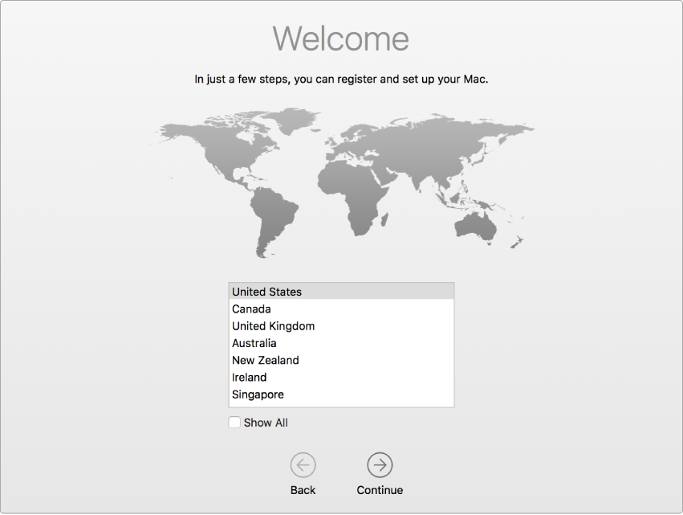

Apple Macbooks
Macbook Enrollment
VERY IMPORTANT: Please make sure that you are connected to stable internet before proceding. On these Macs, if you power down the machine or don't have it internet during the setup process, you will have to bring it back to your local NetTech to do a reset on the machine.
Step 1: Select your country
Turn on your device Choose a country to set the language and time zone for your Mac.

Step 2: Join a Network
Connect to a Wi-Fi network: Choose the network and enter a password, if necessary. Join a network that has internet access. Location does not matter. If you are on campus, you can connect to:
WiFi Name: HBUHSD-BYOD
WiFi Password: hbuhSD#education!

Step 3: Remote Management
The Device will automatically recognize that the device belongs to HBUHSD. This will get your Macbook setup automatically. Click Continue on the bottom right.

Step 4: Sign into your HBUHSD Google Account
On the Sign in with Google screen, type your HBUHSD Google Account. An example would be jsmith@hbuhsd.edu.

Enter your Gmail Password.
Step 5: Provisioning
Your Macbook will now start configuring everything. Please allow it to grab the Macbook's assigned configuration.

Step 6: Create a Password
You'll be asked to create the name and password of your computer account. You'll need this information to log in to your Mac, change certain settings, and install software.

Step 7: Location Services
Tick the box for Enable Location Services on this Mac. This service is important for use with Siri, Maps, Spotlight suggestions, and more. If you don't want Apple to have access to your location, do not tick this box.

If you do not tick that box, you can confirm by pressing the Don't Use button.

Step 8: Select your Time Zone
In the Time Zone pane, make sure that ”Set time zone automatically using current location” is selected and your Mac is connected to the Internet. If you want to set the time zone manually, deselect ”Set time zone automatically using current location.” Then click the map to choose a time zone.

Step 9: Finalizing
When the setup assistant finishes setting up your Mac, you'll see the Finder, which includes a menu bar at the top of the screen and the desktop below that.

Step 10: Software Installation
Our HBUHSD software package should automatically start downloading. If you are on a hotspot, it is recommended that you find a different source for internet so you don't use up all of your data. You are now all good to go. You can check by clicking into Applications and checking to see if they appear.

If you see ? icons on your dock, this means that the software has not been installed onto your machine yet. After the software installation gets pushed down and is complete, a restart will fix these ? icons.

Signing into iCloud
Managed Apple IDs are a new feature provided by Apple to educational institutions, and provides 200 GB of free iCloud storage for everyone (meaning you can keep your entire device backed up automatically at no charge to you or the district).
Please visit this page if you have previously created an AppleID using your HBUHSD email and have not completed the migration yet. You should have received an email from Apple or dcao@hbuhsd.edu with instructions on how to migrate your account.
To get started, you will need your @hbuhsd.edu Microsoft Credentials. If you have been using a Macbook/iMac throughout your stay here at HBUHSD, chances are that you have never used these credentials before. Please contact ishelp@hbuhsd.edu for a password reset.
Step 1: Settings
Choose Apple menu > System Preferences, then click Sign In.
Step 2: Enter your Microsoft HBUHSD credentials.
Enter your Apple ID and password. If prompted, enter the six-digit verification code sent to your trusted device or phone number and complete sign in.
You can choose to merge your Safari with iCloud if you want here. If you are not sure, you can go ahead and press Don't Merge.
Step 3: Verify that you have 200GB of iCloud Storage.
To see more details about your storage usage, open the Settings app on an iPhone, iPad, or iPod touch; System Preferences on a Mac; or the iCloud for Windows app on a Windows PC. You can see how much iCloud storage you have and how much is available. You can view high-level storage information in Account Settings on iCloud.com.
Accesories Guide
Setting up your Docking Station.
Please watch the embed video for instructions on how to setup your teacher bundle.


To install the dock, start by connecting the AC power to an outlet. The charger will go into #4 in the diagram above. From there, you can connect the USB-C to USB-C cable to the back of the dock on one side and then connect the other side to the computer.
Video Timestamp: 1:20
Lenovo Docking Station User Guide
ThinkPad X1 Presenter Mouse User Guide
ThinkPad TrackPoint Keyboard II User Guide
ThinkPad X1 Presenter Mouse
This 2-in-1 accessory combines the functionality of a mouse with a handy presenter. Control PowerPoint or PDF slides using gyro technology and intuitive buttons, and make your points clearly from across the room with a virtual laser pointer and highlight & magnify capabilities. Crafted for comfort, the V-shaped mouse provides room to rest one’s palm while the index and middle fingers are positioned over the buttons. Perfectly portable, the narrow body and soft edges fit pockets and bags without bulging. You can connect this mouse to your computer using Bluetooth or the 2.4G USB receiver.
To charge this device, plug in the supplied cable to the charging point pictured above. Two hours of charging will provide 2 months of use.
ThinkPad TrackPoint II Keyboard
The ThinkPad TrackPoint II Keyboard translates the ThinkPad notebook’s iconic typing experience into a stand-alone device. True to form, it features the same dish-shaped ergonomic keycaps for comfort, as well as an integrated TrackPoint for easy navigation in tight spaces without a mouse. It’s versatile and reliable Bluetooth or Wireless Nano USB Dongle allows up to 2 devices to connect, and supports both Android and Windows. Even the visually impaired can enjoy the TrackPoint II, thanks to its 6-point entry support. You can connect this mouse to your computer using Bluetooth or the 2.4G USB receiver as well.
Features & Benefits
-
Features dish-shaped ergonomic keys for comfort
-
Versatile and reliable Bluetooth or Wireless Nano USB Dongle allows up to 2 devices to connect

To charge this device, plug in the supplied cable to the charging point pictured above. 15 minutes of charging will provide 1 week of use.
Connect a Bluetooth device with your Mac
Connect your Mac with a Bluetooth keyboard, mouse, trackpad, headset, or other audio device.
-
Make sure the device is turned on and discoverable (see the device’s documentation for details).
-
On your Mac, choose Apple menu > System Preferences, then click Bluetooth.
-
Select the device in the list, then click Connect. (If asked, click Accept (or enter a series of numbers, then press Enter).
You need to connect your Mac with the device only once. The device remains connected until you remove it. To remove a device, Control-click its name.
You can also connect a Bluetooth device to your Mac by selecting Bluetooth status icon in the menu bar and selecting the device.